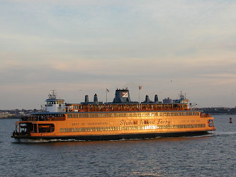
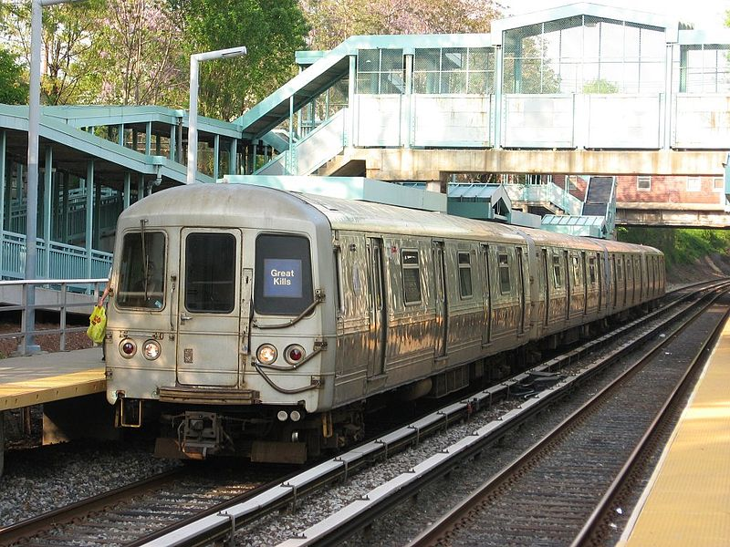
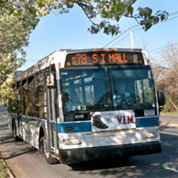

To enjoy all that Staten Island has to offer, you first have get here! Take a look at information for getting to the Island and ways to get around once you're here.
If you are staying in Manhattan, Brooklyn, Bronx, or Queens, and want to take public transportation, the ferry is the best bet.
The Staten Island Ferry runs every 15 minutes during the morning and evening rush hours. In between the morning and evening rush hours, the ferry runs everyone 30 minutes. You can view the ferry schedule here. Oh, and the ferry is free both ways.
Directions: Take the R train to Whitehall, exit on the Whitehall end of the station, the ferry terminal is directly outside of the train exit. Alternatively, take the 4 or 5 train to Bowling Green and walk about 2 blocks north and the Whitehall Ferry terminal is straight ahead.
Staten Island is unique in that it does not have an underground subway like the four boroughs. Instead it has an above ground railway system that starts at St. George ferry and runs along the eastern side of the island.
The SIR schedule varies between rush hours and off-peak hours, check the schedule here. The train is free at every station except Tompinskinville and St. George, you must pay to enter and exit the SIR system at these two stations. You pay for SIR with the NYC Metrocard, you can purchase or refill your Metrocard at Tompkinsville or St. George.
Directions: From the ferry, follow the signs for the SIR and swipe your Metrocard to enter, follow the signs for local and express trains.
Because Staten Island does not have a subway system, it has an extensive system of buses that run all over the Island. There's even two buses that run between Staten Island and Brooklyn and one that runs between Staten Island and Bayonne, New Jersey.
Most buses start and end their trips at the St. George Ferry Terminal. You can check which buses start from the ferry here. All buses in Staten Island use NYC MTA Metrocard, the current fare is 2.75 a ride for regular buses. If you wish to take express buses back to the city, the fare is $6.50, express buses do not enter the ferry terminal.
Directions: From inside the St. George terminal, you can follow the signs for Ramps A, B, C, D to figure out where to catch your bus. Express bus stops are scattered throughout the island, so it's best to find the stop closest to your cross-street.